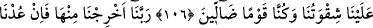

AZGINLIĞIMIZ
BİZİ ALTETTİ
102. Artık kimlerin (sevap) tartıları ağır basarsa, işte asıl bunlar kurtuluşa
erenlerdir.
103. Kimlerin de tartıları hafif gelirse, artık bunlar da kendilerine yazık
etmişlerdir; (çünkü onlar) ebedî cehennemdedirler.
104. Ateş yüzlerini yakar; orada suratları çirkin ve gülünç bir halde bulunurlar.
105. Size âyetlerim okunurdu da, siz onları yalanlardınız değil mi?
106. Derler ki: Rabbimiz! Azgınlığımız bizi altetti; biz, bir sapıklar topluluğu idik.
107. Rabbimiz! Bizi buradan çıkar. Eğer bir daha (ettiklerimize) dönersek, artık
belli ki biz zalim insanlarız.
108. Buyurur ki: Alçaldıkça alçalın orada! Bana karşı konuşmayın artık!
“Artık kimlerin” akîdelerden ve amellerden olan hasenelerinin sevab “tartıları ağır
basarsa,” yâni, kimin sahih akaidi ve salih amelleri varsa bunların Allah katında bir
ağırlığı ve kıymeti olur. “
”, “
” kelimesinin çoğuludur. Allah katında ağırlığı ve
değeri olan amel demektir. Bu konuyla ilgili geri kalan sözler, A‘râf sûresinin tefsirinde
geçti.
“işte asıl bunlar kurtuluşa erenlerdir.” Arzu edilen her şeyi elde eden ve kaçılan her
şeyden kurtulan kimselerdir.
103. Kimlerin de tartıları hafif gelirse, artık bunlar da kendilerine yazık
etmişlerdir; (çünkü onlar) ebedî cehennemdedirler.
“Kimlerin de tartıları hafif gelirse” yâni, kimin sahih akaidi ve salih amelleri yoksa